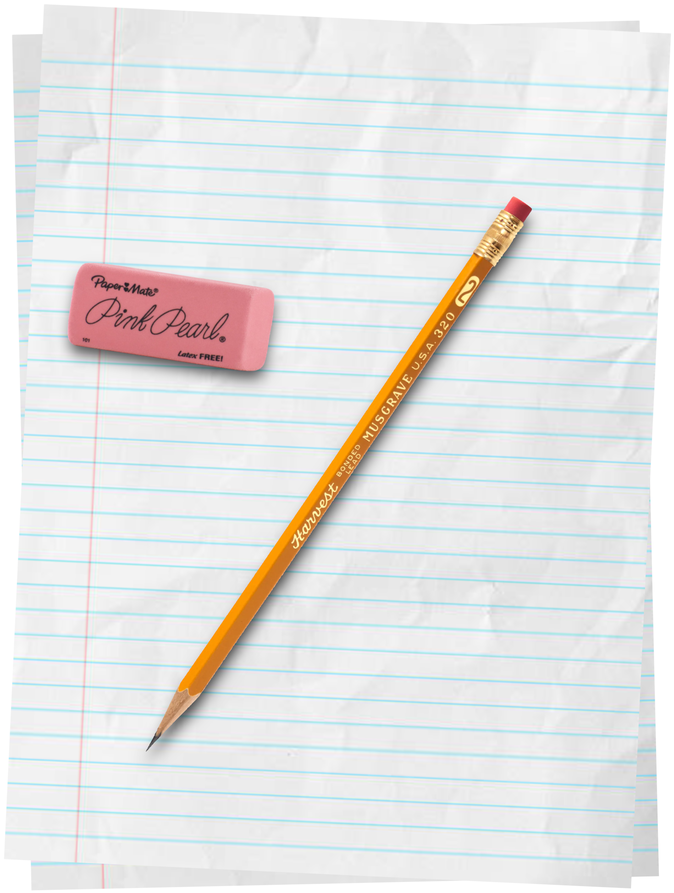
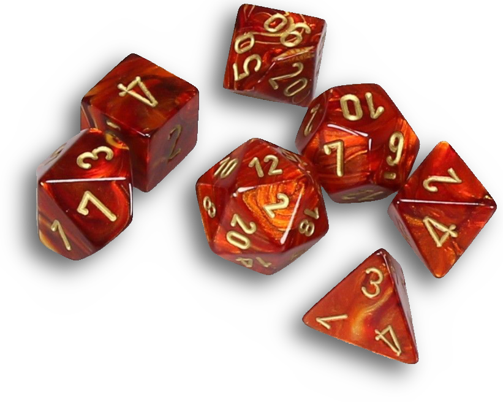
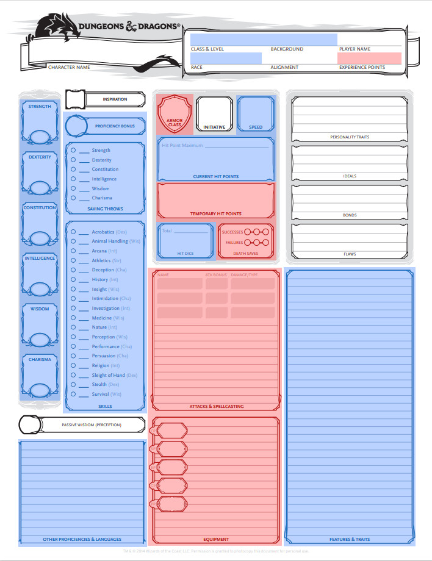
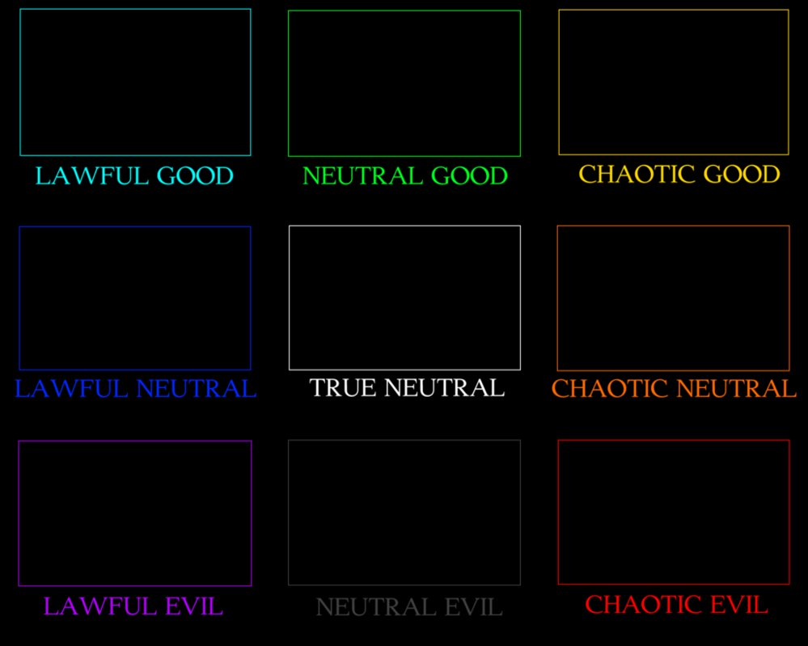

Character Creation Guide
In this section, you will find a treasure trove of instructions to aid you in the creation of a Dungeons and Dragons character, including a full guide to filling out your character sheet. You're going to be joining me along the journey of character creation while I bring life to Shlorbak the Swift, beloved children's hero and icon to all.
This page is formatted in order, so you can read it from top to bottom for the full Masterclass experience. Or, if you already know what you're doing, you can use the sidebar to skip around and find exactly what you need.
Race
Like in real life, everything in Dungeons and Dragons always comes back to race. But, unlike in real life, you can pick any race you want, and no one is necessarily better than another. Except for half-elves, but you won't have to deal with that if you're using my custom race alterations (which, if you're playing in my game, you are).
Your character's race grants you a number of special traits which may influence the way you play. Let's say Shlorbak is an elf. The elf trait lineup looks like this.
- Ability Score Increase. Your Intelligence score increases by 1.
- Age. Elves do not reach full maturity until around 40 years old. The average elf lifespan is between 700-800 years, but they have been known to live for up to a millenium.
- Speed. Your base walking speed is 30 feet.
- Trance. Elves do not sleep. Instead, they meditate deeply, remaining semi-conscious, for 4 hours a day. While meditating, you remain aware of your surroundings as if fully awake. After resting in this way, you gain the same benefit that a human does from 8 hours of sleep. Additionally, magic can't put you to sleep.
How They're Alike
There are four traits assigned to every character by every race: ability score increase, age, size, and speed.
The ability score increase trait increases your ability scores, believe it or not. It gives you a bonus to one or two of them, but which of the six ability scores is increased, and by how much, depends on each particular race.
The age trait has no impact on the game. It's just there to help you decide how old your character is by explaining your race's average lifespan. Unlike in previous editions, size also has basically no effect unless you're trying to grapple a Large target. Speed, on the other hand, actually matters. It dictates how far you can move in a single turn.
As an elf, we now know that Shlorbak can live for up to a millenium if he's lucky, he's around six feet and a half in height (with a size of Medium), and he can move 30 feet per turn without having to use the Dash action. He also gets a +1 bonus to his Intelligence.
How They're Different
In addition to the boring stuff that doesn't do anything in fifth edition for some reason, each race also has its own distinct traits that no other race has. For example, Shlorbak (like all elves) has the Trance trait, meaning he doesn't need to sleep, and can instead meditate for 4 hours each day.
Many races are also furhter divided into "subraces" unique to each other. For example, in my setting, there are two elf subraces: Sothonian and Alkarian. Though both get the elf race's +1 to Intelligence, Sothonians receive a further +2 to either Strength or Dexterity, whereas Alkarians get a +2 to either Constitution or Charisma. We'll call Shlorbak a Sothonian, and take the Dexterity bump because he's swift.
All this talk of ability scores will be relevant again later, so remember which scores are increased by your race. Write them down, or just come back to your race later to check.
Class
Ah, the RPG class system. I don't think there's a single other subject out there that's had more online personality quizzes made about it. In addition to being the largest single source of your character's abilities, your class is also the only mechanical element that you'll continue interacting with throughout the course of the game (other than your magic item hoard, with any luck). Good old Shlorbak will be a ranger.
Points, Dice, Wife
Have you ever played a video game? In that game, was your general aliveness tracked via a number displayed on the screen labeled Health or Vitality? If so, say "Thank you, Gary Gygax." There are a lot of video game mechanics in use today inspired by the original Dungeons and Dragons, and that includes hit points, or "HP."
| Class | Hit Die |
|---|---|
| Artificer | d8 |
| Barbarian | d12 |
| Bard | d8 |
| Cleric | d8 |
| Druid | d8 |
| Fighter | d10 |
| Monk | d8 |
| Paladin | d10 |
| Ranger | d10 |
| Rogue | d8 |
| Sorcerer | d6 |
| Warlock | d8 |
| Wizard | d6 |
But, back in the age of pen and paper, it was kind of a pain in the ass to track your stats along an exponential curve like video games do. So the creators of D&D just said "fuck it" and, like just about everything else in the game, they made it random. After all, it is a dice game. Also, this way, you don't have to have passed algebra to play. So, the number of hit points you gain at each level is determined by a roll of the dice. These are called "hit dice." Go figure.
Each class has its own hit die, the lowest being a d6 (sorcerer and wizard) and the highest being a d12 (barbarian). You get a number of these hit dice equal to your level. So a first-level rogue has 1d8, a fourth-level fighter has 4d10, and a multiclasses character with one level of rogue and four levels of fighter has 1d8 and 4d10.
Using these dice to determine your hit points is fairly simple. At each level, you roll one die and add your Constitution modifier. But at first level, the gods are kind because you're a beginner, and you automatically get the maximum roll. We don't know Shlorbak's Constitution modifier, so let's just call it a +1. That means at first level, Shlorbak would have 11 hit points. Now, if placing your hit points in the hands of fate seems annoying, there's a solution. Instead of rolling, you can take the average value, which is equal to half the die's maximum value + 1. So the average roll of a d8 is 5, and the average of a d12 is 7.
However, the statisticians among you may have noticed that taking the "average" every time will result in a higher hit point average than rolling every time. To remedy this inequality and put the fun back in gambling, I like to bend the rules a little. If a player rolls a 1 for their hit points, I allow them one reroll. This way, there's an actual reason to take a chance. The safe option is less optimal, and the optimal option is less safe.
I also unapologetically bully and harrass any players who don't want to roll for their hit points, because I mean come on. Don't be a pussy. It's Dungeons and Dragons. You're here to kill monsters and roll dice, so roll the damn dice.
Skills and Saves
Enough hit points. On to the actual class content. Every class grants you a number of proficiencies, which can essentially be sorted into three categories: skills, saving throws (commonly abbreviated as "saves"), and other. For all three, the effect is the same: whenever you make a roll using one of your proficiencies, you get to add your proficiency bonus. This number will change as you gain levels, but it starts as a +2.
"Other" encompasses just about everything from weapons to armor to shields to tools to vehicles to gaming sets to languages. Coincidentally, there's a section at the bottom of the character sheet just for these miscellaneous proficiencies, labeled "Other Proficiencies and Languages".
Skills and saving throws are actually quite similar, but at the same time are also quite different. A skill is something that your character has trained, and can be reasonably better at than the average man or woman. A saving throw is something your dungeon master makes you do when he's mad at you.
Both are divided into categories based on the six ability scores (although there are no skills for Constitution), and both are executed in pretty much the same way: roll the die, add the relevant ability score modifier, and then (if you're proficient) add your proficiency bonus. Easy peasy, right?
We can see from the ranger class that Shlorbak gets proficiency with light and medium armor, shields, and all weapons, as well as Strength and Dexterity saves. He also gets to choose three skills from the ranger skill list. I asked Shlorbak, and he says he likes Nature, Perception, and Survival.
Background
Now I have some pretty strong feelings about the way Wizards of the Coast handled backgrounds in the official rules for fifth edition. Specifically, I feel strongly that they did it wrong. I mean, what do those guys know about game design? Why dedicate a whole chapter of your rulebook to a list of pre-made backgrounds when it's clear from the text that the readers are supposed to make their own? Whatever.
As I see it, the background comes in three parts. Two of them go on your character sheet, one of them happens in the beautiful, ever-expanding garden of your mind.
The Concept
At its core, this is a game of imagination and storytelling. And friendship and community and all that fairy bullshit. So
let's stretch those storytelling muscles. This is where you can really let your genius shine. It's probably the most narrative-heavy part
of character creation, and I find that kind of stuff really fun.
Can you think of a single word or phrase that describes your character? What's their title? What is the most important thing that defines who they are? Paul Atreides from Dune is the son of a powerful duke. Conan the barbarian is a warrior, literally born on the battlefield. Think of how you would introduce your character and their story to someone unfamiliar with them. "This is Shlorbak, the __________." What goes on that line? Monster exterminator? Village hero? Whatever it is, that's your concept. That's your background. As for our elfy friend, I think he's a disgraced noble.
The Proficiencies
Like your class, your background grants you a number of proficiencies. Think of them as a few skills of the trade that you picked up over the years. Mileage may vary depending on what officially-made background you use, but when it comes to creating your own, I recommend a very simple structure: two skill proficiencies, and two proficiencies dedicated to languages or tools or something or other.
Maybe our trusty ranger gets proficiency in Persuasion, since nobles are good at ordering people around, and Survival, because he's homeless. That's just the vibe I get from him. And we'll throw in one extra language and one gaming set.
The Feature
O, the big, vague part of the background that I can't really give you advice on. What can be said? Every background grants you a single unique feature. This much should be obvious. For example, the pre-made soldier background can pull rank on other soldiers, the charlatan has a documented false identity, and the hermit has made some grand discovery about the nature of the world.
Make it cool, make it situational, and make it specific to your background. You can look at the pre-made backgrounds published by Wizards of the Coast for inspiration. It could be helpful to tweak the feature from one of those, or compare them to yours for balancing purposes. And, as always when using custom content, run it by your dungeon master before using it. Maybe he can even help you out if you're struggling.
Shlorbak's feature for his Disgraced Noble background is the ability to spread cheer to all the children of the village with fun magic tricks, and by yelling virile, hyperdescriptive threats of violence at them when they walk too close to his house/dumpster.
Ability Scores
Now this is the fun part. Well, the class was the fun part. But this one is still good, I think. This is where you'll really define your character, mechanically. Pretty much every time you roll dice, you're gonna be consulting these and adding them to your roll.
| Ability | Description |
|---|---|
| Strength | Physical exertion and athleticism |
| Dexterity | Agility and general coordination |
| Constitution | Fortitude and physical hardiness |
| Intelligence | Memory and mental acuity |
| Wisdom | Perception and intuition |
| Charisma | Charm and force of personality |
Even without knowing a character's race, class, or background, these six values paint a fairly vivid picture. You can just tell what a character with high Intelligence and low Constitution might look like, without reading a description. Likewise, a character with high Strength and low Wisdom is also an easy one to imagine.
| Ability Score | Modifier |
|---|---|
| 1 | -5 |
| 2-3 | -4 |
| 4-5 | -3 |
| 6-7 | -2 |
| 8-9 | -1 |
| 10-11 | 0 |
| 12-13 | +1 |
| 14-15 | +2 |
| 16-17 | +3 |
| 18-19 | +4 |
| 20 | +5 |
Now, I may have fibbed a little right out the gate. You're not going to consult your ability scores every time you roll dice. In fact, the only time you'll ever use them is when you want to know how much weight you can pull, how far you can jump, and how long you can hold your breath. At the end of the day, they're just holdovers from the ancient days of Dungeons and Dragons. Relics of another age.
What you really need to know are your ability score modifiers. Each of your ability scores will have a different modifier depending on its value, and these are the numbers you'll actually use in the game.
Unfortunately, this is the last thing that everyone agrees on, because there are just about a million ways to actually determine your ability scores, and there isn't a consensus on which one is right. So I'm just gonna go through all of them.
The Classic
The first choice presented in the Player's Handbook is the 4d6 method, more commonly known as the "4d6, drop the lowest" method. It's also probably the most popular of them all. You roll four six-sided dice (or roll the same six-sided die four times, for the impoverished), and add up the highest three results. That's one of your ability scores. Repeat five times, and you're done.
This is a modern, more lenient interpretation of the original stat-generation method, which we'll discuss later. It's random, so still influenced by the dice, but also controlled, so you don't feel like your entire build is up to chance.
The Standard
This is a solution for the impatient player. Instead of rolling for your ability scores, you just use what is known as the "standard array." You get a lineup of 8/10/12/13/14/15, and you can place any one of those numbers in any ability score of your choice. You have to use each number once.
Not only is this the quickest method, but it also provides a balanced experience. Right off the bat, you have two +2 and two +1 abilities, but you also have a 0 and a -1. You're good at a few things, and not so good at a couple other things. So, without ever rolling a single die, your characters strengths and flaws are all sorted out.
The Calculator
| Point Cost | Ability Score |
|---|---|
| -2 | 6 |
| -1 | 7 |
| 0 | 8 |
| 1 | 9 |
| 2 | 10 |
| 3 | 11 |
| 4 | 12 |
| 5 | 13 |
| 7 | 14 |
| 9 | 15 |
The standard array may seem like a very safe, corporate stat-generation method, but in reality, it was born amidst the primordial soup that is the point buy method. Rather than choosing ability scores from a pre-arranged list, you are instead given 27 "points" with which to purchase the scores that you want.
A single ability score of 8 costs 0 points. Increasing your scores above 8 costs points, while decreasing them below 8 refunds points. The goal of this method is to get the scores you want without your point total going over 27. It so happens that the standard array from the last section costs exactly 27 points.
The Fuck You
If you thought the 4d6 method was scary, you ain't seen nothing yet. This is how Gary Gygax and his friends determined their ability scores way back in the bygone age of 1974, and it isn't exactly what you might call "balanced" or "good." But it is interesting, and at the end of the day, that's all we can ask for.
Instead of rolling four dice and dropping the lowest result, you roll three dice. 3d6 per ability score. No subtraction, only addition. All six of your scores are completely random, and can be anything from 3 to 18, with absolutely zero moderation. What's that? You want to reroll? You have a -4 in every stat? Fuck you.
For fun, I'll use this method for Shlorbak. Based on my die rolls, he has an array of 5/18/6/3/3/3. Not exactly stellar by any stretch of the imagination. But don't forget your racial ability score bonuses! As we discussed way back in the Race section, Shlorbak has +1 Intelligence for a total of 4, and +2 Dexterity for a total of 20. So his final lineup is 5/20/6/4/3/3. Looking like a good, balanced build. Though, this means he doesn't exactly have 11 hit points like we thought. He actually has 8.
Putting It All Together
At this point, we're mostly done with your character. We've already finished all the sections on the character sheet marked in blue. Those marked in red are for use in-game, and we won't be going over them. That leaves only a few boxes for us to fill.
Inspiration
The box located above the ability scores and saving throws section is for "Inspiration." Inspiration is a metagame mechanic used by dungeon masters to reward players. Essentially, the DM can give you Inspiration for good roleplaying. While you have it, you can spend it to gain advantage on a roll.
Passive Perception
Let's move on to the lower left box, labeled "Passive Perception." What does that mean? Well, as you may have guessed, it's related to the Perception skill. Imagine for a second, you're tracking cautiously through a dark, mossy hall in an ancient ruin. The droning noises of dripping water and creaking stone assault you at all angles, from just outside the feeble range of your torchlight, setting your teeth on edge.
You spend as much time looking over your shoulder as where you're going, only to be reminded every time that you can't see more than twenty feet away from you. Your mind is restless imagining what manner of horrid, twisted creature lurks beyond the seemingly impenetrable yet ever-encroaching wall of darkness, just beyond your warm circle of protection, and what will happen when the torch's light inevitably fades.
All of a sudden, you hear a noise. It's the DM saying, "Make a Perception check." You roll: 4. "Well, uh, you don't see anything. Carry on." That certainly shifted the mood. Instead of being immersed in the atmosphere of the dungeon and worried about its dangers, now you're just worried about when your DM is going to backstab you. You want to make another Perception check, but you know that would be metagaming.
But what if there were a number the dungeon master could use to simulate the average result of a Perception check, without having to ask you to roll one? That would solve our little problem, wouldn't it? Well, luckily for us all, the game designers thought of this. Enter Passive Perception: a number that does exactly that thing I just described.
To find out your Passive Perception, just add 10 to your Perception bonus, which means 10 + your Wisdom modifier + your Proficiency Bonus (if you're proficient in Perception).
Initiative
This is a simple one. Initiative lives between armor class and speed on your character sheet. Basically, your initiative bonus is your Dexterity modifier. Unless you have some feature or effect that changes it. When you get in a fight, your DM will say, "Roll for initiative," which means roll a d20 and add this number. That's it, really.
The One You Already Know
A rule that needs no introduction, this is probably the most popular game mechanic ever invented. It's kind of taken on a life of its own, to the extent that just about everyone has seen the chart on the left. The funny thing is most of them don't even know that it comes from Dungeons and Dragons. Such is the nature of this wild and wacky underwater cable network we all love so much.
In case you don't know how the chart actually works, and have just been playing along and pretending so that you can fit in (also the nature of the internet), I'm here to help. As you can see, the chart has two axes: Good-Evil, and Law-Chaos. Back in the elder days, the first one didn't exist, but now it does.
Let's get into character for a second. Take all the time you need to center yourself. Deep breath. Remember your motivation. Ready? No? We're gonna keep going anyway. Do you want to do the right thing, even at risk to yourself? If you answered "yes," you're Good. If you answered "no" or "it depends," here's another question. Are you okay with hurting people for your own personal gain or gratification? If you answered "yes" this time, you're Evil. Otherwise, you're Neutral.
Next axis. Do you believe in the virtue of order? Is the world better for the rules that govern it? Do you have rules that govern you? Think about it for a second. And let's forget about any specific real law or government, just thinking generally here. Broad strokes. If you answered "yes," you're Lawful. If not, follow-up question: would the world be better if it weren't governed by law? Would your life specifically be better if it weren't burdened with rules and order? If "yes," you're Chaotic. Otherwise, Neutral. All done!
There are a few problems with alignment. Some people believe a Neutral Neutral (or "True" Neutral) character can't really exist, some people disagree on the meaning of Good and Evil, and some people don't really understand Law vs. Chaos. But I'm gonna let you in on a litte trade secret. None of it really matters, since alignment has no mechanical consequences whatsoever. Instead of coming up with an alignment and then trying to fit into it, just pick whatever you think best represents your character based on their actions. It's more of a label than a rule. So really this whole section is pointless.
If you want a more in-depth explanation of the intricacies of alignment and why it's meaningless, I recommend you check out this video.
Personality
The last thing on your character sheet (beside "Player Name," which I hope you can fill in without my help) is the series of four boxes in the upper right. As you can tell from the labels, they're meant to provide a snapshot of your character's personality like a roleplay cheat sheet. But I think it's pretty reductive, and can't possible capture the potential complexity of an actual character.
First up is personality traits. According to the rules, you're supposed to have two, but I'd encourage you to come up with as many as possible. These are mannerisms, quirks, and other little things that add up to who you are. Essentially, anything that doesn't fall into the other three categories.
Next is your ideal. You only need one of these. In essence, it's a way of thinking or a code that you live by. A personal belief that drives you, like, "Treat others how you want to be treated," or, "Honesty is the best policy." What principles drive your character?
Then there's the bond. This is like a goal, or a conviction. Something you strive to attain, something you want to protect, something you need to destroy. It could be anything from a beloved daughter or little sister, to avenging a dead companion, to stolen property you intend to retreive, to a debt you intend to repay.
Finally, the flaw. This one is self-explanatory. Just something wrong with your character. Like trust issues or compulsive lying or Tourettes. Don't actually do that one though.
All said and done, I still find these stupid. The fact that they have their own dedicated text fields makes it feel like they're being assigned the same level of importance as something like class features. But the way you display your character's personality doesn't need to be so formulaic. Every character has these things by definition, but they're not as important in some as in others. The flaw comes to mind as something that doesn't necessarily need to take center stage all the time.
My advice is to always remember three things about your character every time you say or do something in-character: what are your values, what are your mannerisms, and what are your goals? These three things will make for a consistent and believable performance every time, and build a unique image of who your character is.